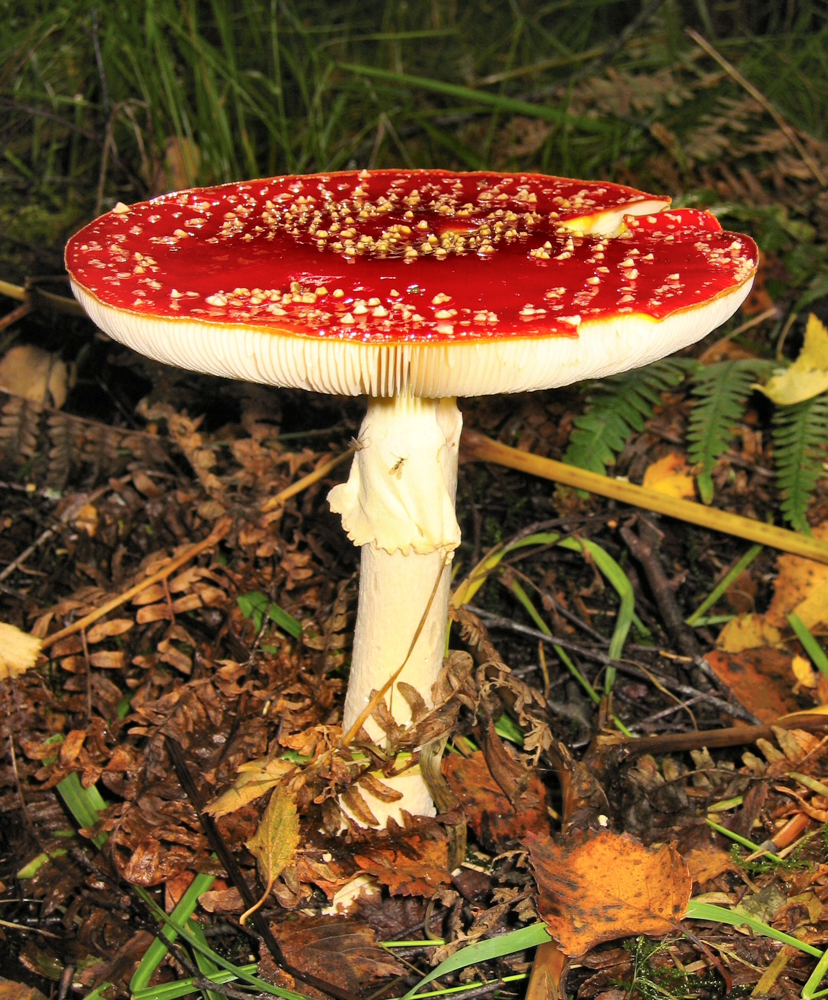
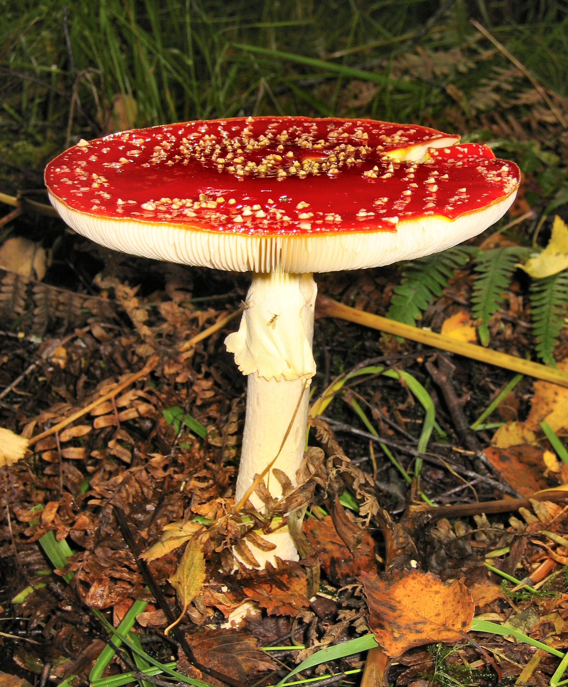

Charakterystyka
| Cecha | Opis |
|---|---|
| Kapelusz | 5 - 15cm, żywo czerwony do pomarańczowego, z białymi, przeważnie piramidalnymi, łatwo ścieralnymi, regularnie rozmieszczonymi łatkami - resztkami osłony, które gwałtowne deszcze często spłukują; młody kulisty, później wypukły, w końcu rozpostarty; skórka błyszcząca i ściągalna; stary brzeg prążkowany. |
| Blaszki | Białe, miękkie, wybrzuszone, gęste, wolne. |
| Trzon | Biały walcowaty, słabo kosmkowaty, z kulistą do jajowej, białą bulwą pokrytą kilkoma brodawkowatymi pasemkami; pierścień duży, biały obwisły, nieprążkowany, o brzegu białym lib żółtawo ząbkowanym. |
| Miąższ | Biały, pod skórką kapelusza żółty. |
| Zarodniki | 9 - 11 x 6 - 9µm, gładkie. Wysyp biały. |
Toksyczność
Muchomor czerwony (Amanita muscaria) jest jednym z najbardziej rozpoznawalnych, a jednocześnie niebezpiecznych grzybów. Zawiera kilka związków biologicznie czynnych (między innymi muskarynę i kwas ibotenowy oraz ich pochodne), które wpływają na ośrodkowy układ nerwowy i układ pokarmowy. Dawkowanie toksyn bywa bardzo zmienne — zależy od wieku owocnika, miejsca wzrostu i indywidualnej wrażliwości osoby, która je spożyje — dlatego każde spożycie muchomora uznawane jest za potencjalnie groźne.
Pierwsze objawy zatrucia zwykle pojawiają się w ciągu kilkudziesięciu minut do kilku godzin po zjedzeniu i często zaczynają się od dolegliwości żołądkowo-jelitowych: nudności, wymiotów, bólu brzucha i biegunki. Te symptomy mogą być mylące, bo przypominają zwykłe zatrucie pokarmowe — jednak u osób zatrutych często szybko dołączają zaburzenia neurologiczne.
W następnej fazie mogą wystąpić objawy ze strony układu nerwowego: zawroty głowy, dezorientacja, splątanie, zaburzenia równowagi i koordynacji, a także zmiany świadomości — od silnego pobudzenia i halucynacji po senność i ospałość. U niektórych osób obserwuje się również drgawki, drżenia mięśniowe czy zaburzenia mowy. Przebieg może być różny — u jednych dominuje pobudzenie i omamy, u innych znaczne osłabienie i senność.
Objawy mogą narastać falami i ich nasilenie nie zawsze koreluje z ilością spożytego grzyba — duże znaczenie ma indywidualna wrażliwość organizmu. Grupy szczególnie narażone to małe dzieci, osoby starsze oraz osoby z chorobami przewlekłymi — u nich nawet stosunkowo niewielka ilość toksyn może wywołać cięższy przebieg zatrucia.
W większości przypadków ciężkie powikłania są stosunkowo rzadkie, ale zawsze istnieje ryzyko poważnych incydentów — odwodnienia wskutek wymiotów i biegunki, urazów wynikających z upadków przy zaburzeniach równowagi czy powikłań neurologicznych. Dlatego każde podejrzenie zatrucia muchomorem wymaga poważnego potraktowania.